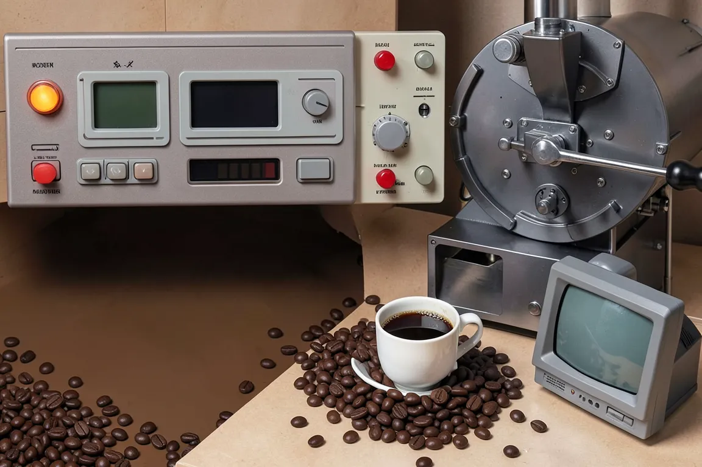

internet · 1976–1989 · also: Retro-futurism of the analogue age, Used future, Cassette punk
Bulky hardware from a future imagined on tape: CRT monitors, membrane keys, toggle switches and beige casings, with amber or green phosphor text. It draws on Syd Mead's industrial futures and Japanese bubble-era electronics. The look is functional, worn and a little cramped.

Core thesis
The future is a machine with visible switches: every function has a physical control, a label and a status light, and the casing shows the wear of use.
Design principles
Set text in phosphor amber (#FFB000) or green (#33FF66) on a near-black ground (#14130F) with contrast of 9:1 or more.
Build panels as casings in beige (#D8D0B8) or grey (#9A9A8E) with a 4px radius, a 2px dark border and a 1px light top edge.
Label each control in upper-case mono at 12px with +0.08em tracking, and place the label above the control.
Group controls in bays on a 12-column grid with 16px gutters; separate bays with a 2px groove.
Add a status light of 8px, a toggle switch, a segment display or a cassette window to each major panel.
Frame the main screen as a CRT: 8% corner radius, a 1px inner glow and scanlines of 2px at 8% opacity.
Add print marks to casings: part numbers, arrows, and one hazard stripe of 8px in orange (#E8662B) or yellow.